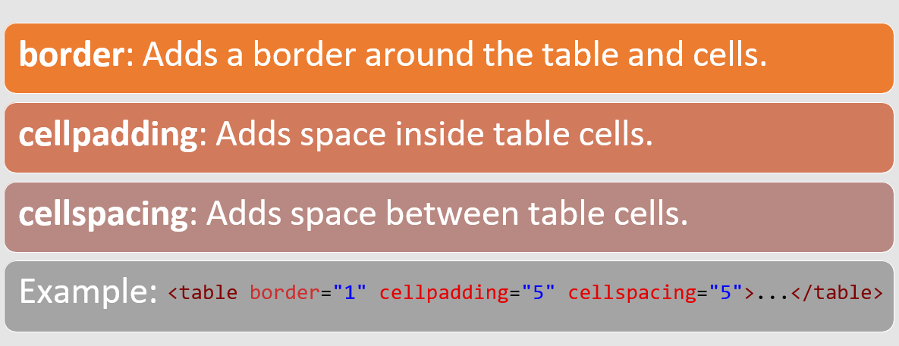

Introduction to HTML Layout
HTML PROVIDES BASIC ELEMENTS FOR STRUCTURING WEB CONTENT.
FOCUS ON TABLES, DIV, AND SPANFOR LAYOUT DESIGN
THESE ELEMENTS HELP ORGANIZE CONTENT WITHIN A WEBPAGE.
Introduction to <div>
<div>: A block-level element used to group and structure content.
Used for creating sections of a webpage.
Unlike tables, <div> is better suited for flexible layout design.
Introduction to <span>
<span>: An inline element used to group text for styling.
Does not create a new block on the page.
Best for styling small sections of text.
Table Attributes
Table attributes in HTML are used to define how tables should be displayed and formatted. Attributes like border, cellspacing, and cellpadding affect the appearance of the table.
Table Attributes Diagram
